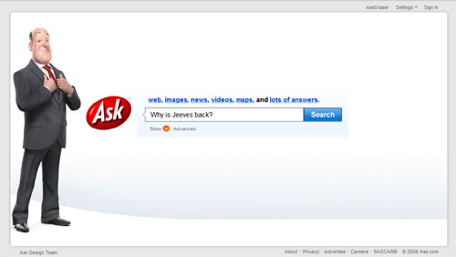

Situation: conclusions
Social role is also a powerful communication tool for designers, for example giving the agent medical accessories in a healthcare context, or a bookish style in an academic one. Adding cues to the agent's role in society through clothing or cultural references makes the social relationship between users and the agent explicit and intuitive.
